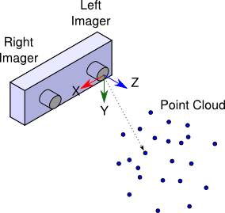

双目相机生成点云¶
1、启动驱动¶
由于为了生成点云相关的数据，我们必须按照stereo_image_proc节点所需要的数据进行发布。这里假设我们以stereo作为ROS命名空间，则应该向以下四个topic发布数据，
/stereo/left/image_raw # 左目图像
/stereo/left/camera_info # 左目相机元信息
/stereo/right/image_raw # 右目图像
/stereo/right/camera_info # 右目相机元信息
所以我们需要将之前标定得到的left.yaml和right.yaml读取出来。
# 导入依赖
from sensor_msgs.msg import CameraInfo
# 声明Topic发布者
self.left_image_info_pub = rospy.Publisher("stereo/left/camera_info", CameraInfo, queue_size=1)
self.right_image_info_pub = rospy.Publisher("stereo/right/camera_info", CameraInfo, queue_size=1)
# 准备好标定结果文件
dir_path = os.path.dirname(os.path.realpath(__file__))
self.left_yaml_file = dir_path + "/../calibration/left.yaml"
self.right_yaml_file = dir_path + "/../calibration/right.yaml"
def yaml_to_camera_info(self, yaml_file):
"""
将文件内容解析为CameraInfo对象
"""
print "file_path:{}".format(yaml_file)
with open(yaml_file, "r") as f:
calib_data = yaml.load(f)
camera_info_msg = CameraInfo()
camera_info_msg.width = calib_data["image_width"]
camera_info_msg.height = calib_data["image_height"]
camera_info_msg.K = calib_data["camera_matrix"]["data"]
camera_info_msg.D = calib_data["distortion_coefficients"]["data"]
camera_info_msg.R = calib_data["rectification_matrix"]["data"]
camera_info_msg.P = calib_data["projection_matrix"]["data"]
camera_info_msg.distortion_model = "plumb_bob"
# print camera_info_msg
return camera_info_msg
# 从yaml读取相机信息，包含相机内参、畸变系数
left_cam_info = self.yaml_to_camera_info(self.left_yaml_file)
right_cam_info = self.yaml_to_camera_info(self.right_yaml_file)
self.msg_header.frame_id = 'stereo_image'
self.msg_header.stamp = rospy.Time.now()
# 添加头信息
left_cam_info.header = self.msg_header
right_cam_info.header = self.msg_header
# 发布话题数据
self.left_image_info_pub.publish(left_cam_info)
self.right_image_info_pub.publish(right_cam_info)
2、启动立体影像处理¶
在控制台执行：
$ ROS_NAMESPACE=stereo rosrun stereo_image_proc stereo_image_proc
将stereo_image_proc节点，设置到stereo的命名空间中，其节点会自动订阅相机发布的left和right图像，此方式，等同于将两个image_proc实例分别运行在stereo/left 和stereo/right命名空间。此外，此节点会额外输出视差图像（stereo/disparity）和点云图（stereo/points2）
- 查看单目图像：
$ rosrun image_view image_view image:=/stereo/left/image_rect_color
- 查看双目图像及视差图像：
$ rosrun image_view stereo_view stereo:=/stereo image:=image_rect_color
点云图我们可以使用rviz查看
- stereo_image_proc节点简介

stereo_image_proc节点，可以对原始立体相机的图像，进行矫正和去马赛克处理。也可以执行立体2D-3D处理以生成视差图像和点云图。在生成的主题名称中，节点分别解析了左和右，因此这些Topic话题名称分别对应在 left/和right/。
所有图像处理都是按需进行的，例如仅当有颜色image_color主题的订阅者时，才执行颜色处理。仅当有矫正image_rect话题的订阅者时才执行矫正。视差和点云也是如此。当没有订阅者时，stereo_image_proc节点则不再订阅image_raw和camera_info话题。
点云的输出结果数据是的基于左目相机的，X指向右目，Y向下，Z朝外

3、启动rviz¶
执行rviz或rosrun rviz rviz
- 已有rviz配置文件
rviz -d src/little_stereo_camera/rviz/stereo_pcl.rvizor
rosrun rviz rviz -d src/little_stereo_camera/rviz/stereo_pcl.rviz
4、启动tf转换¶
ROS的静态TF转换发布者：static_transform_publisher，目的是发布一个全局的tf转换，帮助我们旋转rviz中的点云图像内容
格式1：static_transform_publisher x y z yaw pitch roll frame_id child_frame_id period_in_ms
格式2：static_transform_publisher x y z qx qy qz qw frame_id child_frame_id period_in_ms
以格式1为例：发布一个静态变换，x、y、z为以m为单位的偏移量，yaw、pitch、roll为单位为弧度的旋转变量，period_in_ms为单位是毫秒的变换发布频率，推荐100ms（10hz）
例如：`static_transform_publisher 1 0 0 1.57 0 0 link1_parent link1 100
rosrun tf static_transform_publisher 0 0 1 0 0 -1.57 map stereo_image 100
也可以将此转换配置到roslaunch文件，例如：
<launch>
<node pkg="tf" type="static_transform_publisher" name="link1_broadcaster" args="1 0 0 1.57 0 0 link1_parent link1 100" />
</launch>
小工具
我们可以使用一个在线的工具，方便的将rpy和四元数进行转换
https://www.andre-gaschler.com/rotationconverter/
参考：ROS的TF转换
5、编辑launch文件¶
- 导出rviz文件
- 编写launch
<launch>
<!-- <param name="use_sim_time" value="true"/>-->
<node pkg="my_stereo_camera" type="stereo.py" name="stereo_camera" output = "screen">
<param name="cam_id" value="0"/>
</node>
<group ns = "stereo">
<node pkg="stereo_image_proc" type="stereo_image_proc" name="stereo_image_proc" output = "screen">
</node>
</group>
<node pkg="rviz" type="rviz" name="rviz" args="-d $(find my_stereo_camera)/rviz/stereo_pcl.rviz" />
<node pkg="tf" type="static_transform_publisher" name="tf_map_cam" args="0 0 1.0 -1.57 0 0 map stereo_image 100" output = "screen"/>
</launch>
- 调用launch
roslaunch my_stereo_camera stereo.launch